С чего начать
Здесь два сайта.
Настройки контента — сюда кладут фото и тексты, которые потом сами попадают в предложения. Адрес: http://72.60.132.88:51004
Генератор КП — здесь собирают коммерческое предложение и скачивают PDF. Обычно его открывают по ссылке на квоту. Сам по себе он здесь: http://72.60.132.88:51003
1. Собрать предложение
- Откройте ссылку на квоту.
- Нажмите язык: RU, UA или ENG.
- Нажмите шаблон: Dental, Пластика лица или Пластика.
- Нажмите зелёную кнопку Далее.
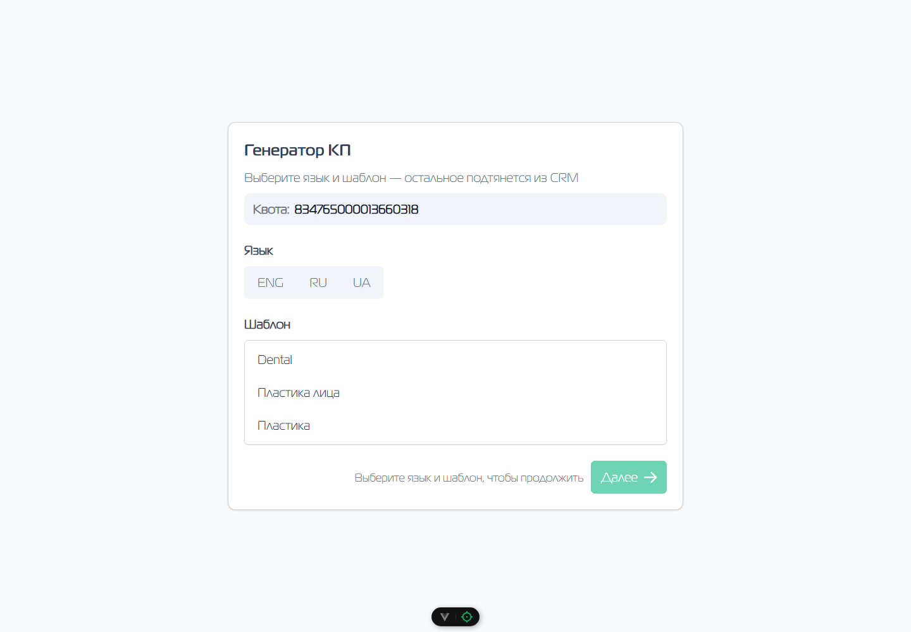
Откроется редактор.
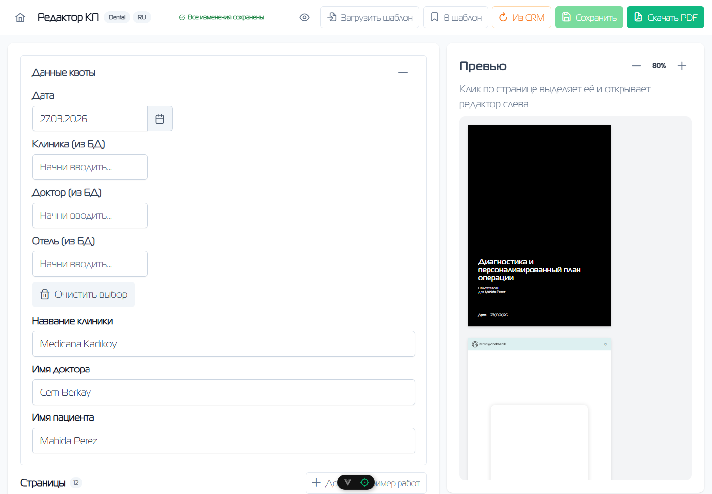
- Слева список страниц. Нажмите нужную — она откроется и слева, и в превью справа.
- Поправьте текст.
- Когда сверху написано Все изменения сохранены, нажмите Скачать PDF.
Если сверху горит Есть несохранённые изменения, сначала нажмите Сохранить.
Если имя, клиника, доктор или тексты не обновились и на экране старое — нажмите оранжевую кнопку Из CRM справа вверху. Она заново забирает данные. То, что вы уже руками поправили в этой квоте, при этом заменится на свежие данные.
Значок глаза слева от Загрузить шаблон открывает предложение целиком, без полей редактора. Так удобно проверить, как страница выглядит перед PDF.
2. Не та клиника, доктор или отель
Слева блок Данные квоты.
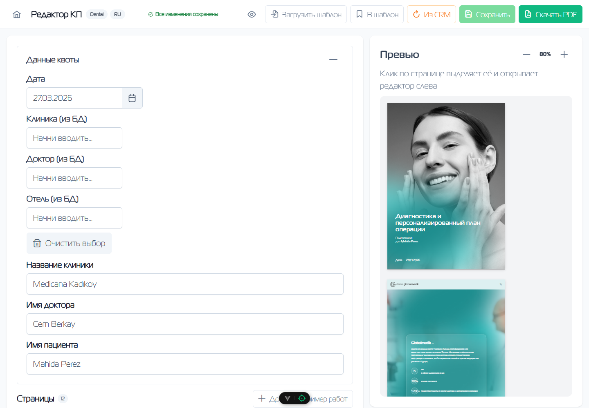
- В поле Клиника (из БД), Доктор (из БД) или Отель (из БД) начните вводить название.
- Нажмите нужную строку в выпавшем списке. Имя, фото и тексты подставятся из настроек.
- Очистить выбор сбрасывает эти три поля.
- Ниже можно поправить Название клиники, Имя доктора и Имя пациента руками, если в строке опечатка.
- Дата — день на обложке. Нажмите на календарь и выберите день.
Если после выбора на превью всё ещё старое, нажмите Из CRM.
3. Фото пациента
Это фото только этой квоты. В настройки их класть не нужно.
- Слева нажмите страницу Профиль пациента.
- При необходимости заполните Возраст, Страна и Пол.
- Ниже шесть клеток: Фото 1 … Фото 6. Пустая клетка на превью справа — белый квадрат.
- Нажмите Upload у нужной клетки и выберите картинку. Откроется обрезка.
- Кадрировать — обрезать ещё раз. Clear — убрать фото.
Поле со ссылкой под кнопками можно не заполнять. Достаточно Upload.
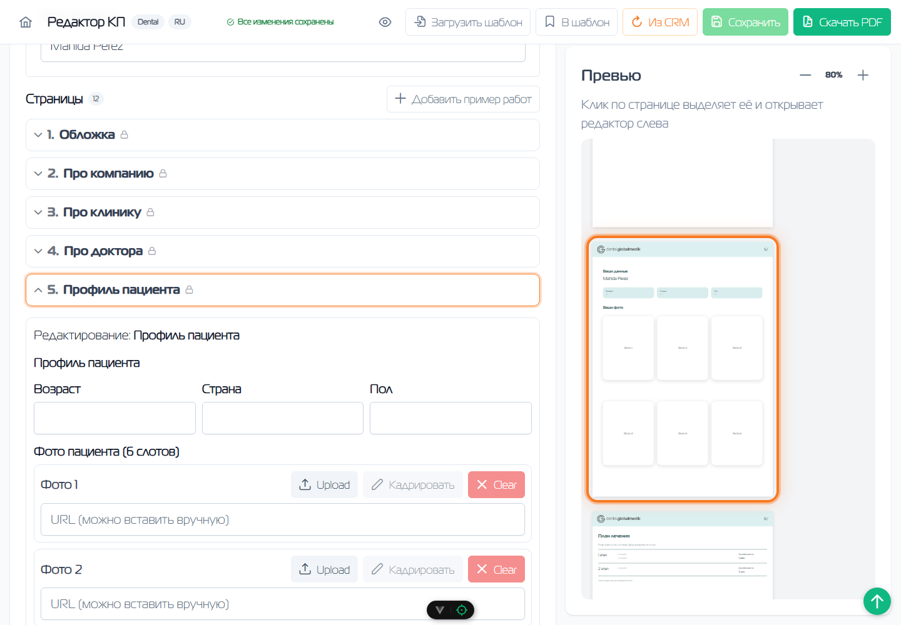
4. Страницы
Список слева — это страницы предложения. Нажмите строку, чтобы открыть её.
У страницы с замочком нет кнопок удаления. Такую страницу нельзя убрать и нельзя переставить. Это обложка, доктор, цена и остальные обязательные листы.
У дополнительной страницы, например Примеры работ, справа четыре кнопки:
- стрелка вверх — поднять страницу;
- стрелка вниз — опустить;
- копировать — сделать такую же страницу ещё раз;
- корзина — убрать страницу. Программа спросит подтверждение.
Новую страницу с примером работ добавляет кнопка Добавить пример работ над списком.
5. Один раз заполнили — подставить в другую квоту
Сверху две кнопки: В шаблон и Загрузить шаблон.
Шаблон запоминается для того же типа и языка. Сохранили в Dental на русском — в квоте «Пластика» или на английском этого шаблона не будет.
Сохранить
- Нажмите В шаблон.
- Впишите понятное Название.
- Галочками оставьте страницы, которые нужно запомнить. Выбрать все отмечает все, Снять все снимает.
- Нажмите Сохранить. Отмена — ничего не записывать.
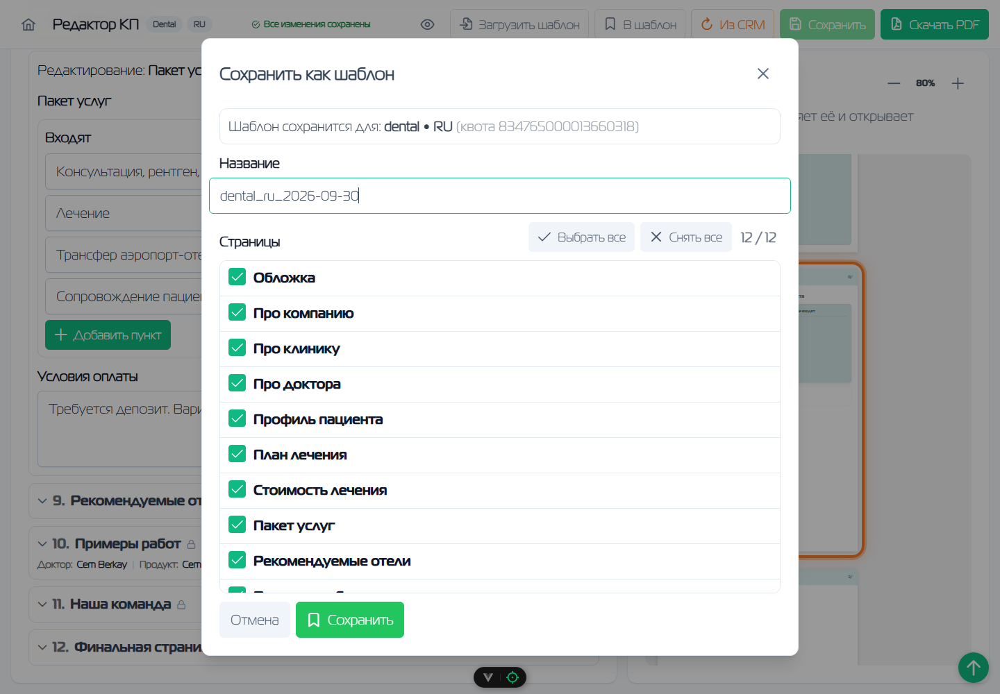
Подставить
- Откройте другую квоту с тем же языком и тем же шаблоном.
- Нажмите Загрузить шаблон.
- Нажмите сохранённое название.
- В списке Как применяем:
- Добавить недостающее — заполняет только пустые места, уже написанное не трогает;
- Заменить выбранное — подставляет поверх того, что уже есть.
- Снимите галочки со страниц, которые менять не нужно.
- Нажмите Применить.
Удалить в этом окне убирает сам шаблон. Квота при этом не удаляется. Обновить — перечитать список.
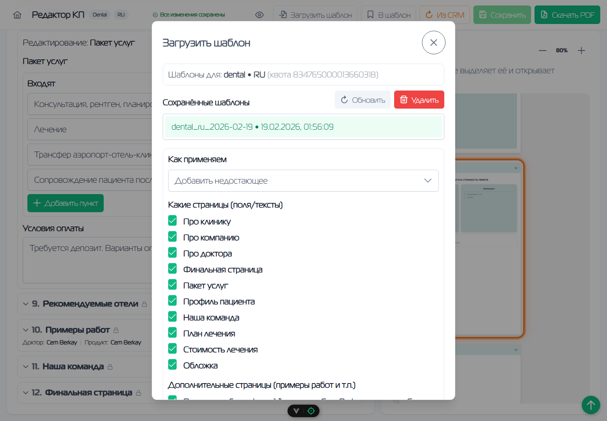
6. Цена и что входит в пакет
Стоимость
- Слева нажмите Стоимость лечения.
- В таблице поправьте Название, Кол-во, Цена и Скидка в строке.
- Добавить строку — ещё одна позиция. Корзина в конце строки — убрать позицию.
- Поле Скидка под таблицей — скидка на всю сумму. Ниже сами посчитаются Подытог и Итого.
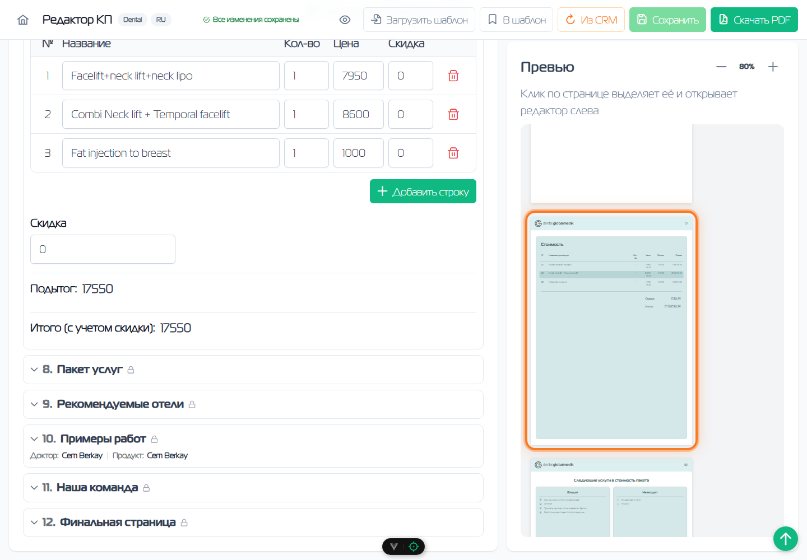
Что входит и что нет
- Нажмите страницу Пакет услуг.
- Слева колонка Входят, справа Не входят.
- Поправьте текст в строке. Добавить пункт — новая строка. Корзина — убрать строку.
- Внизу Условия оплаты — как платить. Этот текст попадает на ту же страницу предложения.
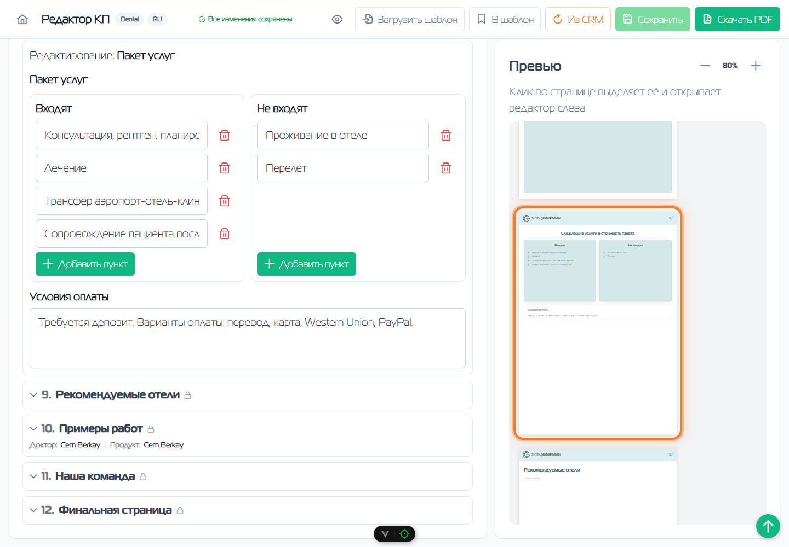
7. Если в предложении пустое фото
Пустое место выглядит так: серый квадрат, надпись Фото не загружено или Фото пока не добавлены.
Сначала посмотрите, чьё это фото.
- Портрет доктора, фото клиники, фото отеля, обложки видео и примеры работ — их кладут в Настройки. Тогда они появятся во всех новых предложениях.
- Фото только этой квоты (например фото пациента) — его загружают прямо в редакторе, на открытой странице слева. Кнопка называется Upload.
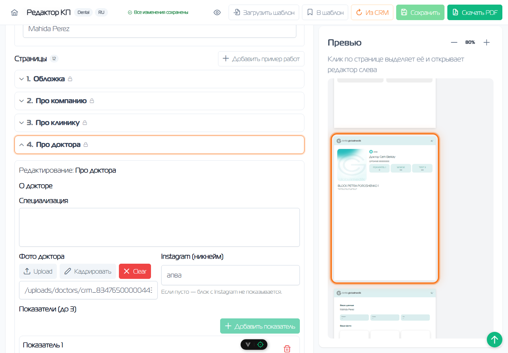
Дальше — куда заходить в настройках.
8. Настройки: с чего начать
Откройте http://72.60.132.88:51004
На главной нажмите карточку, где не хватает фото: Доктора, Отели, Клиники или Продукты.
На карточке справа кнопки RU, ENG и UA. Включите тот же язык, что в квоте, и заполните текст. Потом нажмите зелёную Сохранить вверху. Без этого в предложении останется старый или пустой текст. Фото сохраняется сразу после обрезки, для картинки отдельно жать Сохранить не нужно.
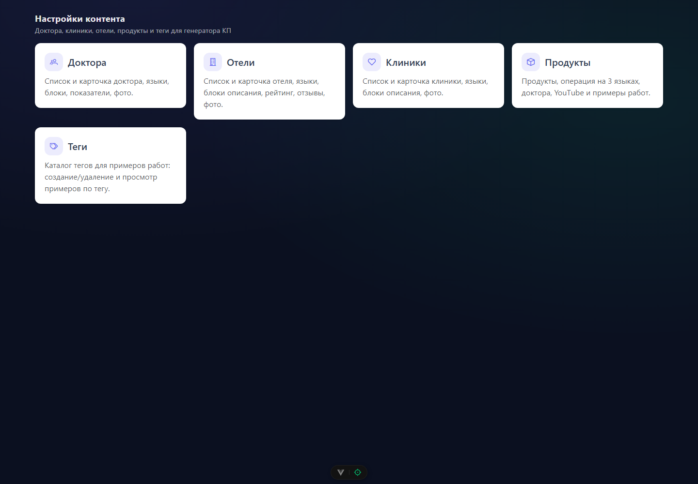
9. Пустое фото доктора
- Нажмите Доктора.
- Найдите имя в поиске справа.
- Нажмите зелёную Открыть в этой строке.
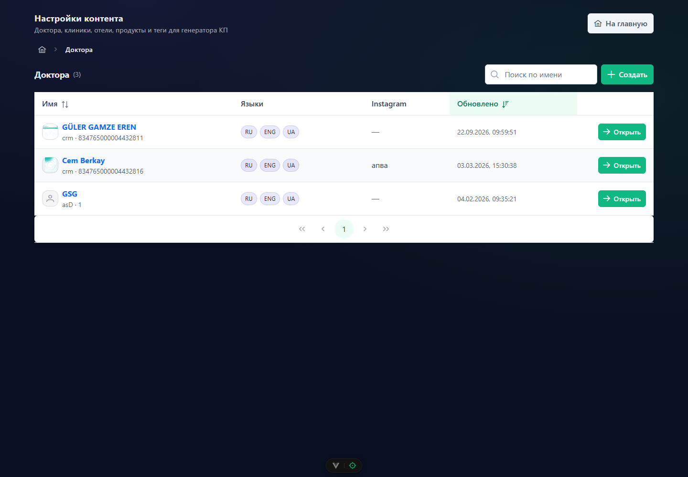
- Слева блок Фото профиля. Если написано Фото не загружено — фото нет.
- Нажмите зелёную Загрузить / заменить.
- Выберите картинку на компьютере.
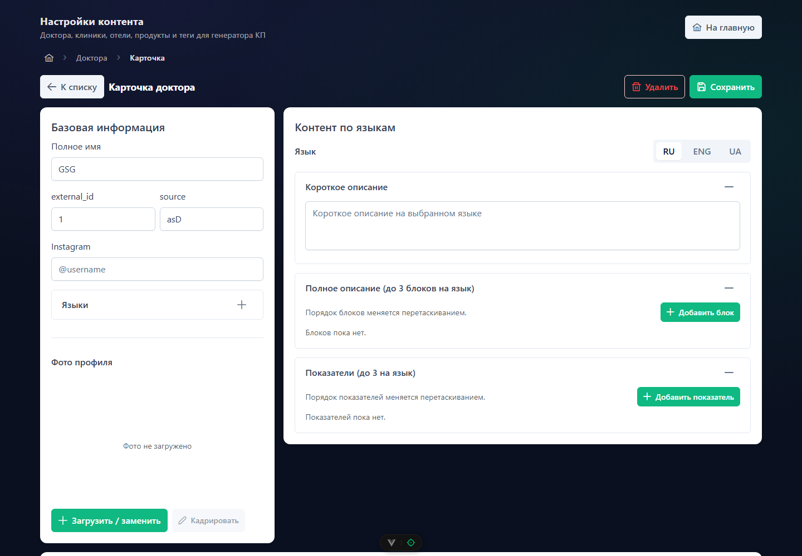
- Откроется окно Кадрирование фото доктора. Синяя рамка — это кусок, который попадёт в документ. Потяните рамку мышью, чтобы лицо было внутри. Нажмите Применить.
- Если передумали — Отмена. Фото тогда не сохранится.
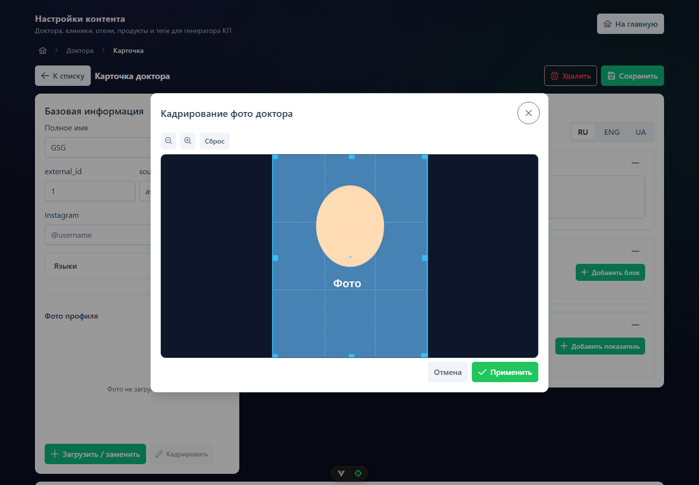
Кнопка Кадрировать под уже загруженным фото — обрезать заново. Удалить справа от «Фото профиля» — убрать картинку.
Фото команды под карточкой доктора
Прокрутите страницу вниз до блока Фото команды доктора.
Если написано Фото пока не добавлены:
- Нажмите Добавить фото.
- Выберите одну или несколько картинок.
- В окне обрезки подвиньте рамку и сохраните.
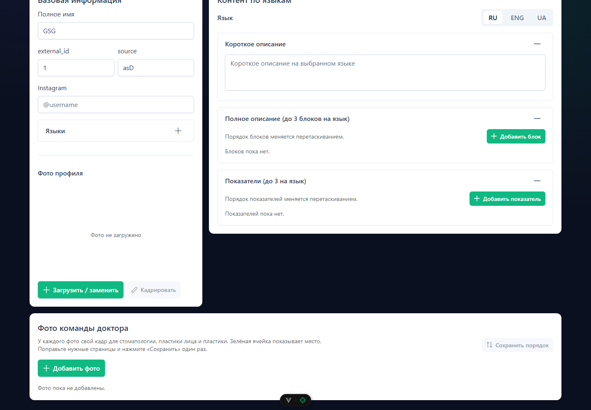
Порядок меняется перетаскиванием за полоски слева от фото. Потом нажмите Сохранить порядок.
10. Пустые фото клиники
- На главной нажмите Клиники.
- Нажмите Открыть у нужной клиники.
- Прокрутите до блока Фото клиники.
- Если написано Фото пока не добавлены — нажмите Добавить фото и обрежьте картинку так же, как у доктора.
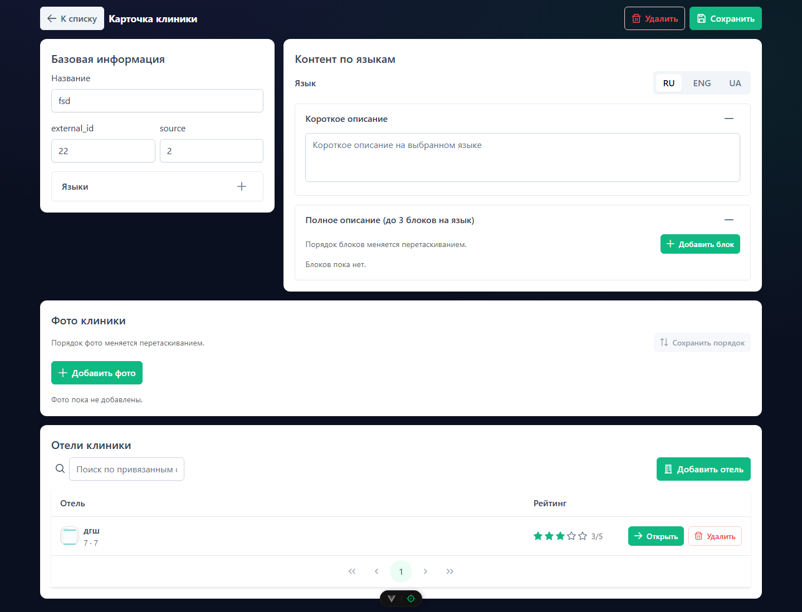
11. Пустые фото отеля
- На главной нажмите Отели.
- Нажмите Открыть.
- Прокрутите до Фото отеля.
- Нет ни одной картинки — Добавить фото.
- Картинка есть, но не та — Заменить.
- Картинка криво обрезана — Кадр.
- Красная корзина — удалить это фото.
- Ссылка на отзывы — адрес страницы с отзывами. Вставьте его и нажмите зелёную Сохранить вверху карточки. Без этой ссылки кнопка отзывов на странице отелей в предложении серая и не нажимается. Потом в квоте нажмите Из CRM, иначе старая квота ссылку не увидит.
На страницу «Рекомендуемые отели» попадает не сам список фото отеля, а отель, который привязан к клинике. Как привязать — в разделе «Откуда программа берёт картинки».
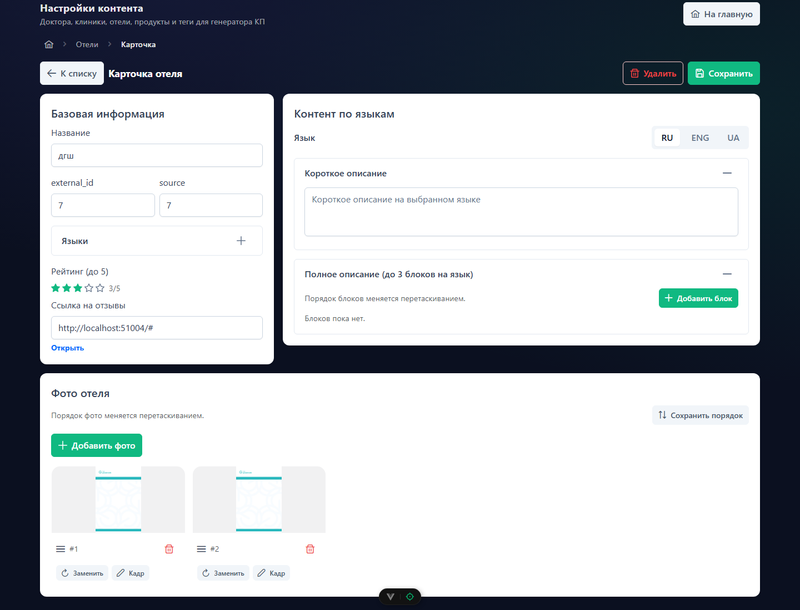
12. Пустые обложки и примеры работ
Это фото операции: обложки роликов и снимки «до / после». Они лежат не у доктора, а у продукта.
- На главной нажмите Продукты.
- Нажмите Открыть у нужной операции.
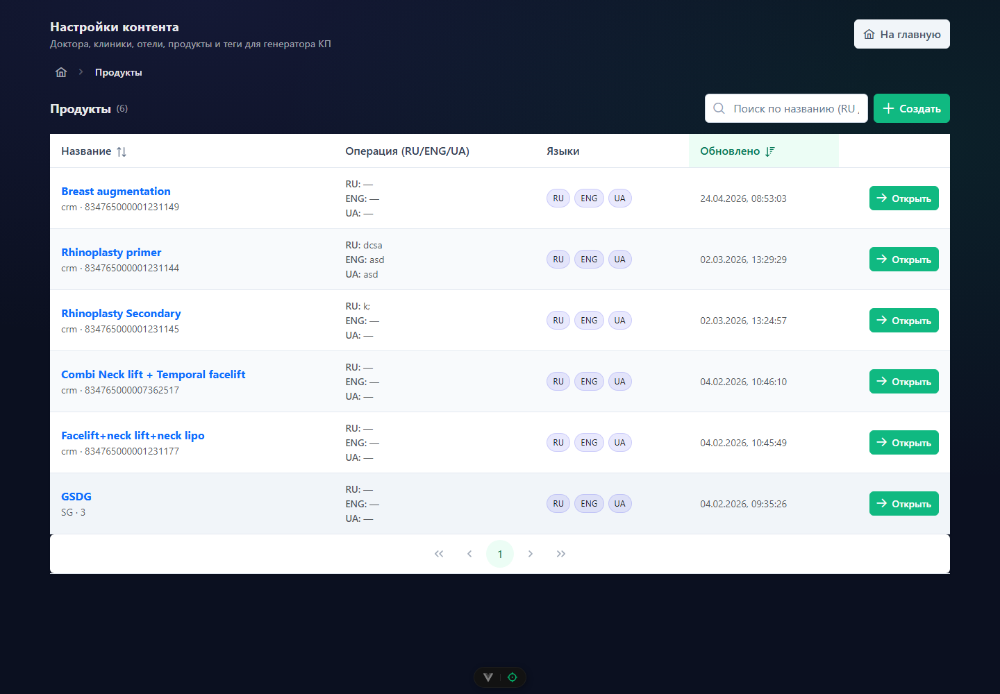
- Справа вверху нажмите вкладку Доктора.
- У нужного врача нажмите Открыть.
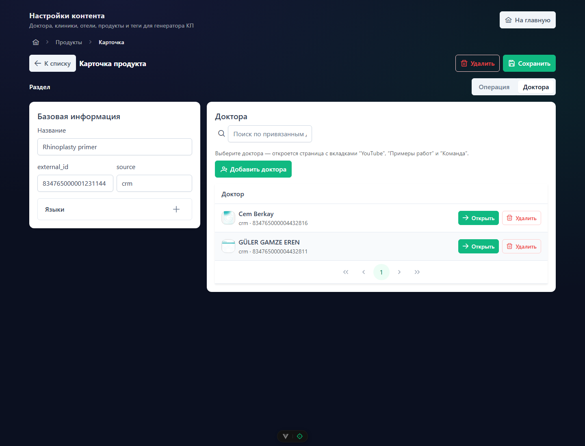
Дальше три вкладки справа: YouTube, Примеры работ, Команда.
Обложки YouTube
Пустой слот — серый квадрат и текст Фото не загружено.
- Нажмите Загрузить под этим слотом.
- Выберите картинку и обрежьте её.
- В поле Ссылка на видео вставьте адрес ролика и кликните мышкой в другое место — ссылка сохранится сама.
Заставка на странице «Наш Youtube» нажимается только если под ней есть ссылка. Фото без ссылки на странице видно, но кликнуть его нельзя: ролик не откроется. Ссылка без фото тоже не показывается.
Четыре слота. На страницу попадают первые три. Четвёртая обложка на страницы предложения не попадает.
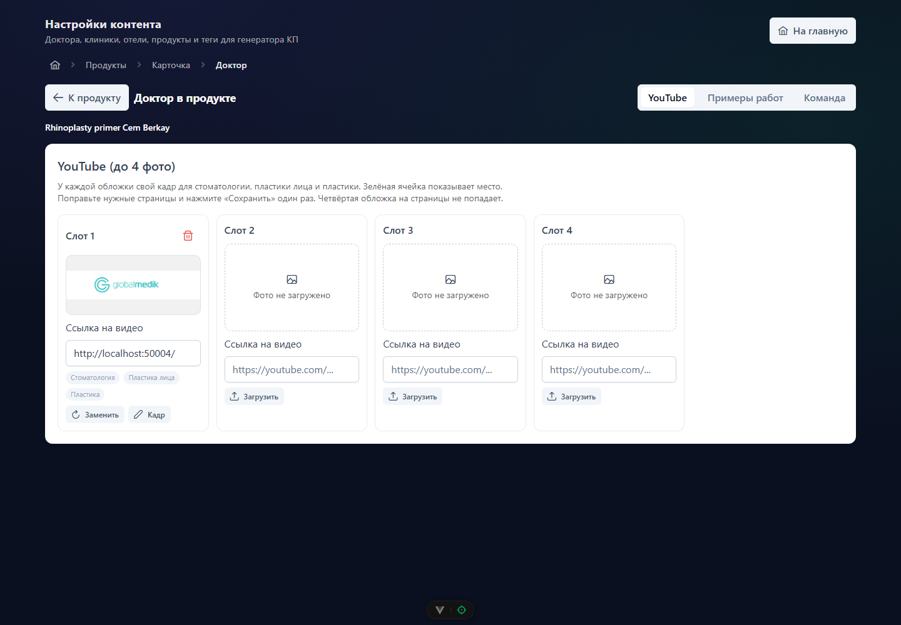
Уже загруженное фото: Заменить — новая картинка, Кадр — обрезать заново, корзина — удалить.
Примеры работ
Фото «до / после» лежат здесь. Пока слот пустой, в предложении на этом месте будет дырка.
Примеров нет совсем
На вкладке Примеры работ написано Примеров пока нет. Списка строк нет.
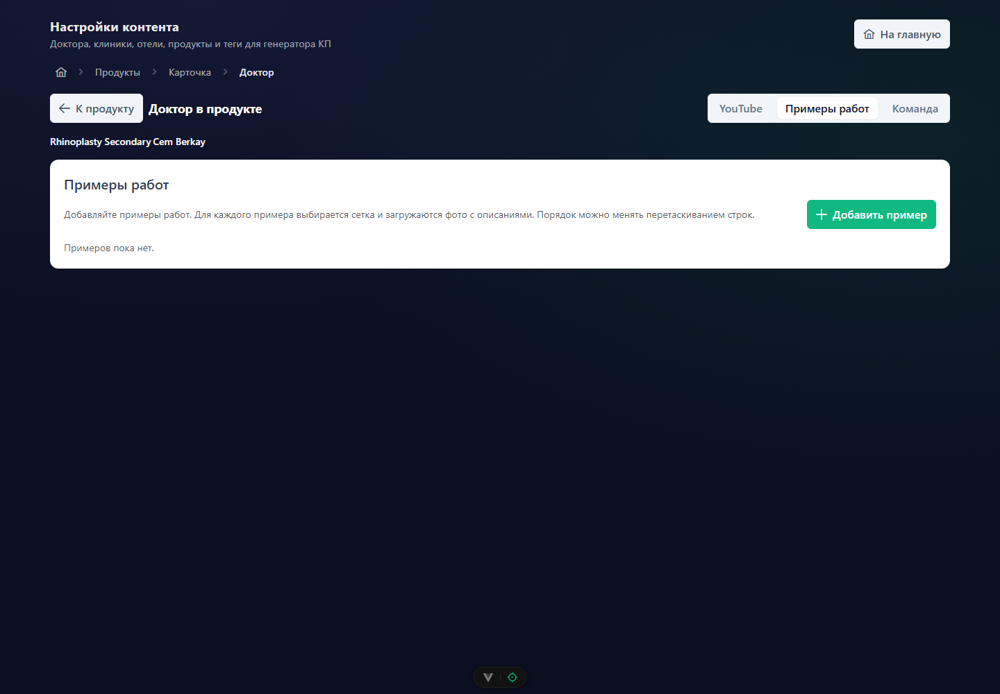
- Нажмите зелёную Добавить пример.
- Откроется окно Новый пример работ. Выберите сетку:
- 1 фото — одна картинка;
- 2 вертикальных — две картинки рядом;
- 2 горизонтальных — две картинки одна под другой;
- 4 фото — четыре клетки.
- Нажмите Создать. Отмена — ничего не добавлять.
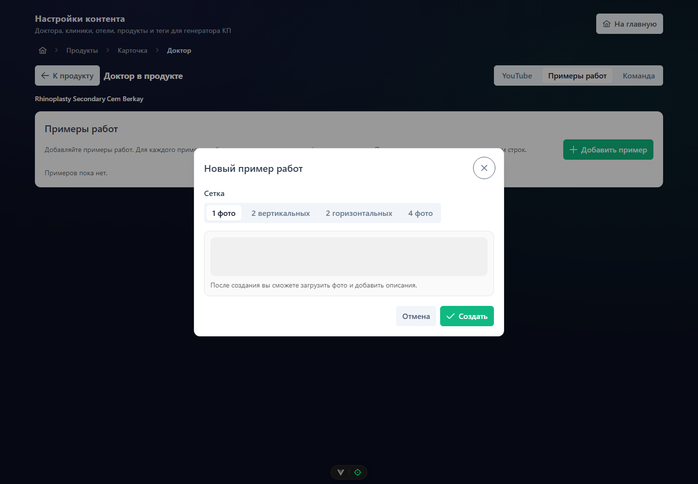
После создания строка появляется, но фото внутри ещё пустые. Их нужно загрузить отдельно, сетка сама картинки не подставляет.
Пример есть, а фото пустые
В колонке Превью серый значок картинки. Это пустой слот.
- Нажмите стрелку слева от строки. Строка раскроется.
- В каждой пустой клетке написано Фото. Нажмите Загрузить и выберите картинку.
- Обрежьте её и сохраните.
- Заполните все клетки выбранной сетки. Одна пустая клетка — одна дырка в PDF.
- Описание под фото пишется только после картинки. Пока фото нет, поле серое и там написано Сначала загрузите фото.
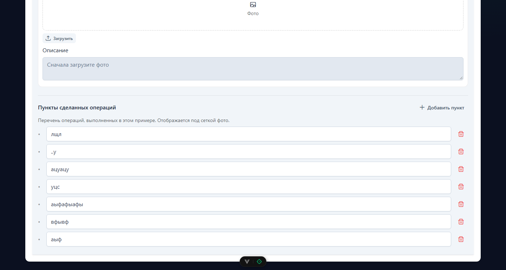
Дальше по желанию:
- Пункты сделанных операций — строки под фотографиями. Добавить пункт, вписать текст, кликнуть мышкой рядом. Текст сохранится сам. Красная корзина у строки убирает только этот пункт.
- Красная корзина справа в строке примера удаляет пример целиком.
- Полоски слева от строки — перетащите, чтобы поменять порядок примеров.
- Уже загруженное фото: Заменить — новая картинка, Кадр — обрезать заново.
В самой квоте страницы нет или она пустая
Откройте квоту и посмотрите список страниц слева.
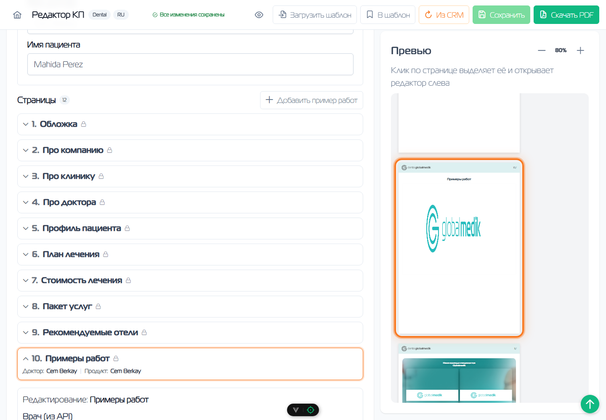
- Страницы Примеры работ нет в списке. Нажмите Добавить пример работ. Появится новая страница, клетки на ней пустые.
- Страница есть. Нажмите на неё. Справа в превью смотрите, есть ли картинка. Слева серый квадрат с текстом Нажми, чтобы загрузить — нажмите на него и выберите файл. Откроется обрезка.
- Поле Layout — та же сетка: 1 фото, 2 вертикально, 2 горизонтально, 4 фото. Поменяли сетку — пустые новые клетки тоже нужно заполнить.
- Картинка уже стоит, но не та: Заменить. Обрезать заново: Кадрировать. Убрать: Убрать.
- Пункты сделанных операций внизу этой страницы. Если пунктов нет, в PDF этот блок не печатается. Добавить пункт, вписать текст.
При Скачать PDF может выскочить окно Есть незаполненные фото. Там написано, сколько пустых клеток осталось в примерах работ.
- Вернуться к редактированию — вернуться и доложить картинки.
- Скачать как есть — PDF скачается с дырками.
Вкладка Команда — те же шаги, что «Фото команды доктора»: Добавить фото, обрезать, при необходимости Сохранить порядок.
13. Откуда генератор берёт картинки
PDF строится из уже сохранённой квоты. Заново скопировать фото из настроек она может в двух случаях: квоту открыли в первый раз или в редакторе нажали Из CRM. Дальше — откуда именно копируется каждая картинка.
Картинка, которую загрузили прямо в квоте кнопкой Upload, остаётся только в этой квоте. В карточку врача, отеля или продукта она сама не записывается.
Портрет на странице «Про доктора»
Берётся Фото профиля из карточки врача: Настройки → Доктора → Открыть.
Страница «Наша команда»
Клеток четыре в шаблоне Dental и пять в шаблонах «Пластика» и «Пластика лица».
- Сначала фото со вкладки Команда у этого врача внутри продукта. Путь: Продукты → операция из квоты → Доктора → Открыть → Команда.
- Если в квоте несколько операций, сначала берётся по одной картинке с каждой, в том порядке, как операции стоят в квоте. Потом добираются следующие фото тех же операций.
- Если клеток ещё не хватает, добирает из блока Фото команды доктора в карточке самого врача.
- Если вкладка Команда у продукта уже заполнила все клетки, фото из карточки врача на эту страницу не попадают.
Страница «Наш Youtube»
Из карточки врача эти обложки не берутся. Только вкладка YouTube у врача внутри продукта.
- Сначала по одной обложке с каждой операции в квоте.
- Если трёх не набралось, добирает следующие слоты тех же операций.
- На страницу идут три штуки. У каждой на странице виден клик только вместе со ссылкой под фото.
- Четвёртый слот на страницу не ставится.
Примеры работ
Тоже только из продукта, не из карточки врача: вкладка Примеры работ у врача внутри операции.
Берутся по очереди операции из квоты. Внутри операции — в том порядке, в каком примеры лежат в списке. Страниц с примерами в одной квоте не больше десяти. Пустая клетка в примере так и остаётся дыркой в PDF.
Рекомендуемые отели
- Отель должен быть в блоке Отели клиники у клиники этой квоты: Настройки → Клиники → Открыть → Добавить отель.
- Картинка отеля — первая фотография в его карточке. Остальные фото этой странице не нужны.
- Кнопка отзывов берёт поле Ссылка на отзывы из той же карточки. Поле пустое — кнопка есть, но серая.
Фото, загруженные в отель, но не привязанные к клинике, на эту страницу не выходят.
Фото клиники
Страница про клинику берёт фото из карточки клиники, сверху вниз, как они стоят в блоке Фото клиники.
Фото пациента
Только из этой квоты, страница Профиль пациента, кнопка Upload. В настройках такого блока нет.
14. После того как фото положили
- Вернитесь в генератор и откройте квоту снова.
- Откройте страницу, где фото было пустым, и посмотрите превью справа.
- Если новая картинка или текст не появились — нажмите Из CRM и подождите, пока страница загрузится заново. Потом снова откройте эту страницу.
- Если картинка на месте — Скачать PDF.
Если при скачивании вылезло окно про пустые фото в примерах работ, нажмите Вернуться к редактированию. Откройте страницу Примеры работ или вкладку с тем же названием в настройках продукта и загрузите картинку в каждый серый слот. Потом скачайте PDF ещё раз.